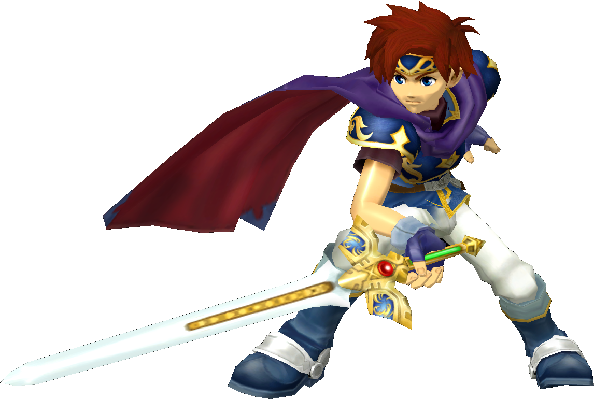

|  | Ranked 20th of tier list : ROY |
| Weight | |
|---|---|
| th heaviest | |
| Shield stats | |
| Roll lenght | 17-19th longest |
| Shield size | 17th biggest |
| Grab range | 5th longest |
| Wavedash lenght | 6th longest |
| Movement stats | |
| Walking speed | 6-10th fastest |
| Turning speed | 23rd fastest |
| Running speed | 7-10th fastest |
| Aerial stats | |
| Jump squat | 6 frames (16th fastest) |
| Short hop | 18-23rd highest |
| Aerial speed | 12-14th fastest |
| First jump height | 19-20th highest |
| Seconde jump height | 24th highest |
| Total jump height | 20-21st highest |
| Average fall speed | 4-5th fastest |
| Fast falling speed | 8th fastest |
| Falling speed | 4-5th fastest |
| Ledge stats | |
| 0-99% ledge roll | 18th longest |
| 100%+ ledge roll | 17th longest |
| 0-99% ledge attack range | 17th farthest |
| 100%+ ledge attack range | 6th farthest |
| Intangible ledgedash (Optimal) | 5 frames |
| Notable players | |
| Sethlon, Lunchables, LSDX, NJzFinest | |
| Smashboard forum | |
| http://smashboards.com/forums/roy.114/ | |
Roy is currently ranked 20th on the tier list, in the F tier. Roy's upsides include a good approach due to one of the best SHFFLs in the game, as well as a good grab game, and among the best reaches in the game. However, Roy's flaws are significant, including poor flexibility in his comboing game, attacks that are difficult to properly land, generally possessing significantly laggy attacks, possessing few moves that can KO and only one of which (forward smash) that is an adequate finisher, and among the worst recoveries in the game while being a light character that is heavily susceptible to combos; as a result, Roy has significant KOing problems while being easy to KO himself, leading to numerous matchups hard countering him, especially against those who are higher-tiered than him.